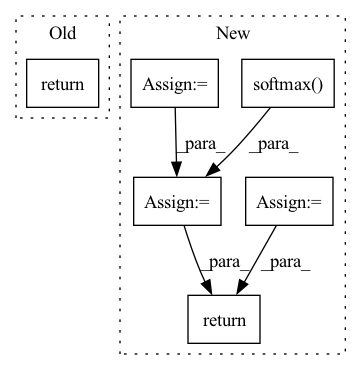

Pattern ID :1035

Before Change
trans_loss_t, domain_acc_t = self._single_domain_forward(g_t, f_t, domain=0)
self.grl.step()
self.domain_discriminator_accuracy = 0.5 * (domain_acc_s + domain_acc_t)
return 0.5 * (trans_loss_s + trans_loss_t)
def _single_domain_forward(self, logits, features, domain=1):
Perform forward on a single domain.
After Change
def forward(self, g_s, f_s, g_t, f_t):
f = torch.cat((f_s, f_t), dim=0)
g = torch.cat((g_s, g_t), dim=0)
g = F.softmax(g,dim=1).detach()
h = self.grl(self.map(f, g))
d = self.domain_discriminator(h)
d_label = torch.cat((
torch.ones((g_s.size(0), 1)).to(g_s.device),
torch.zeros((g_t.size(0), 1)).to(g_t.device),
))
weight = 1.0 + torch.exp(-entropy(g))
batch_size = f.size(0)
weight = weight / torch.sum(weight) * batch_size
self.domain_discriminator_accuracy = binary_accuracy(d, d_label)
return self.bce(d, d_label, weight.view_as(d))
class RandomizedMultiLinearMap(nn.Module):
In pattern: SUPERPATTERN
Frequency: 4
Non-data size: 6
Instances
Fragment ID: 3117695
Project Name: thuml/transfer-learning-library
Commit Name: 8477111b23336e7dd2d349a4b35b969240ff5871
Time: 2020-04-12
Author: 13126830206@163.com
File Name: dalib/adaptation/cdan.py
M Class Name: ConditionalDomainAdversarialLoss
N Class Name: ConditionalDomainAdversarialLoss
M Method Name: forward(5)
N Method Name: forward(5)
M Parent Class: nn.Module
N Parent Class: nn.Module
M File Name: dalib/adaptation/cdan.py
N File Name: dalib/adaptation/cdan.py
M Start Line: 86
M End Line: 90
N Start Line: 87
N End Line: 100
'>
Before Change
v = F.relu(self.norm_v1(self.fc_v1(out)))
v = self.fc_v2(v)
return prob, v, h_out
def make_batch(self, data):
// data = [tr1, tr2, ..., tr10] * batch_size
After Change
left_closest_state = state_dict["left_closest"]
right_team_state = state_dict["right_team"]
right_closest_state = state_dict["right_closest"]
avail = state_dict["avail"]
player_embed = self.norm_player(self.fc_player(player_state))
ball_embed = self.norm_ball(self.fc_ball(ball_state))
left_team_embed = self.norm_left(self.fc_left(left_team_state))
left_closest_embed = self.norm_left_closest(self.fc_left_closest(left_closest_state))
right_team_embed = self.norm_right(self.fc_right(right_team_state))
right_closest_embed = self.norm_right_closest(self.fc_right_closest(right_closest_state))
left_team_embed = self.pool(left_team_embed).squeeze(2)
right_team_embed = self.pool(right_team_embed).squeeze(2)
cat = torch.cat([player_embed, ball_embed, left_team_embed, right_team_embed, left_closest_embed, right_closest_embed], 2)
cat = F.relu(self.norm_cat(self.fc_cat(cat)))
h_in = state_dict["hidden"]
out, h_out = self.lstm(cat, h_in)
a_out = F.relu(self.norm_pi_a1(self.fc_pi_a1(out)))
a_out = self.fc_pi_a2(a_out)
logit = a_out + (avail-1)*1e8
prob = F.softmax(logit, dim=2)
prob_m = F.relu(self.norm_pi_m1(self.fc_pi_m1(out)))
prob_m = self.fc_pi_m2(prob_m)
prob_m = F.softmax(prob_m, dim=2)
v = F.relu(self.norm_v1(self.fc_v1(out)))
v = self.fc_v2(v)
return prob, prob_m, v, h_out
def make_batch(self, data):
// data = [tr1, tr2, ..., tr10] * batch_size
'>
Fragment ID: 3117674
Project Name: seungeunrho/football-paris
Commit Name: 98e6f2e9e75b4a124ecd2be32d7ece32abe24101
Time: 2020-10-26
Author: seungeun07@snu.ac.kr
File Name: Model/ppo.py
M Class Name: PPO
N Class Name: PPO
M Method Name: forward(2)
N Method Name: forward(2)
M Parent Class: nn.Module
N Parent Class: nn.Module
M File Name: Model/ppo.py
N File Name: Model/ppo.py
M Start Line: 71
M End Line: 78
N Start Line: 59
N End Line: 88
'>
Before Change
x_std = self.aff_std(x)
x = -self.aff_x(x) / (1e-8 + 0.1 * x_std)
x = x.mean(1, keepdim=True)
x = F.softmax(x, 2)
for _ in range(self.num_iter):
m = self.aff_m(mask) // [BxCxPxHxW]
mask = (m * x).sum(2)
// xvals: [BxCxHxW]
return mask
After Change
aff = -distance / (self.sigma * std + self.eps)
aff = torch.mean(aff, dim=1, keepdim=True)
aff = torch.softmax(aff, dim=2)
// aff.size() = torch.Size([1, 1, 48, 256, 383])
// mask.size() = torch.Size([1, K, 256, 383])
// print(aff.size())
// print(mask.size())
for _ in range(self.num_iter):
// m.size() = torch.Size([1, K, 48, 256, 383])
m = self.aff_ide(m)
m = (aff * m).sum(dim=2)
return m
'>
Fragment ID: 3117608
Project Name: shjo-april/recurseed_and_edgepredictmix
Commit Name: 09d5aa66cbdfd7a20a6ebc3f82b29dfd3895adba
Time: 2022-08-18
Author: josanghyeokn@gmail.com
File Name: core/refinements/pamr.py
M Class Name: PAMR
N Class Name: PAMR
M Method Name: forward(3)
N Method Name: forward(3)
M Parent Class: nn.Module
N Parent Class: nn.Module
M File Name: core/refinements/pamr.py
N File Name: core/refinements/pamr.py
M Start Line: 133
M End Line: 144
N Start Line: 108
N End Line: 132
'>
Before Change
trans_loss_t, domain_acc_t = self._single_domain_forward(g_t, f_t, domain=0)
self.grl.step()
self.domain_discriminator_accuracy = 0.5 * (domain_acc_s + domain_acc_t)
return 0.5 * (trans_loss_s + trans_loss_t)
def _single_domain_forward(self, logits, features, domain=1):
Perform forward on a single domain.
After Change
def forward(self, g_s, f_s, g_t, f_t):
f = torch.cat((f_s, f_t), dim=0)
g = torch.cat((g_s, g_t), dim=0)
g = F.softmax(g,dim=1).detach()
h = self.grl(self.map(f, g))
d = self.domain_discriminator(h)
d_label = torch.cat((
torch.ones((g_s.size(0), 1)).to(g_s.device),
torch.zeros((g_t.size(0), 1)).to(g_t.device),
))
weight = 1.0 + torch.exp(-entropy(g))
batch_size = f.size(0)
weight = weight / torch.sum(weight) * batch_size
self.domain_discriminator_accuracy = binary_accuracy(d, d_label)
return self.bce(d, d_label, weight.view_as(d))
class RandomizedMultiLinearMap(nn.Module):
'>
Fragment ID: 3117704
Project Name: thuml/transfer-learning-library
Commit Name: 6dfc8e293ca2cbc4d116dc8ed0a6ef176dff0d06
Time: 2020-04-12
Author: 13126830206@163.com
File Name: dalib/adaptation/cdan.py
M Class Name: ConditionalDomainAdversarialLoss
N Class Name: ConditionalDomainAdversarialLoss
M Method Name: forward(5)
N Method Name: forward(5)
M Parent Class: nn.Module
N Parent Class: nn.Module
M File Name: dalib/adaptation/cdan.py
N File Name: dalib/adaptation/cdan.py
M Start Line: 86
M End Line: 90
N Start Line: 87
N End Line: 100